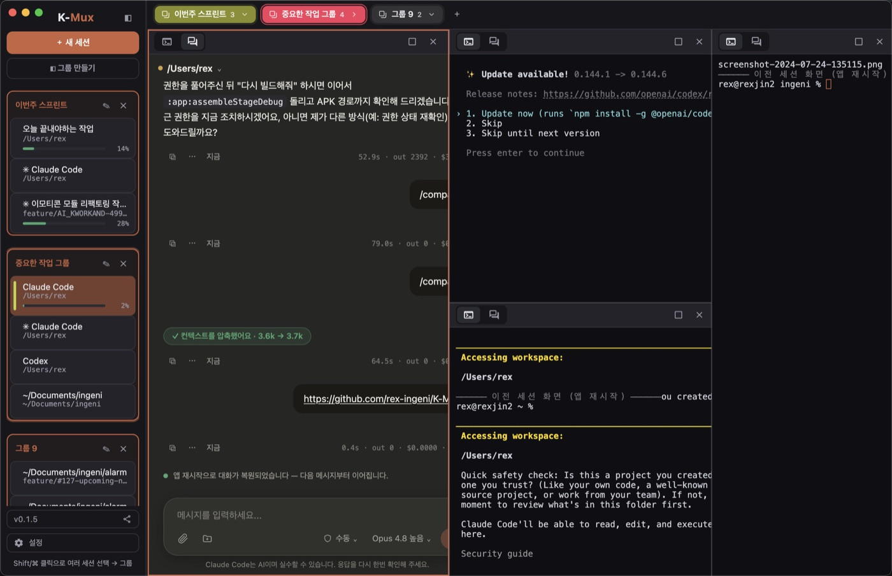

01 · 터미널과 GUI, 나란히
터미널에서 쓰던 기능을
터미널에서 쓰던 기능을
GUI에서 그대로.
터미널 탭은 진짜 CLI(실 PTY)를 그대로 돌리고, GUI 탭은 그 CLI가 말하는 같은 스트림 프로토콜을 파싱해 그린 채팅입니다. 그래서 슬래시 커맨드·권한 모드·모델 선택·/compact까지 GUI에서 그대로 동작합니다. 한 세션에 두 탭이 함께 있고, 각 탭은 같은 폴더 위에서 도는 서로 독립된 대화입니다.
